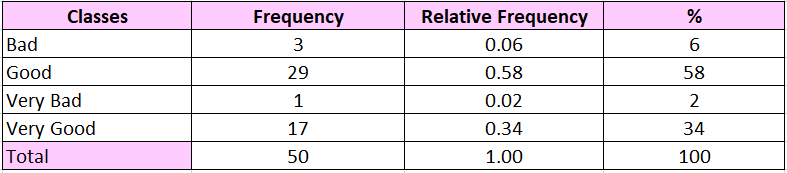
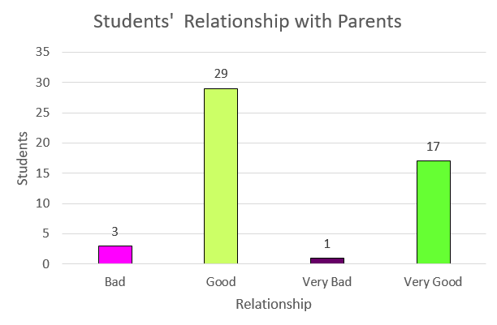
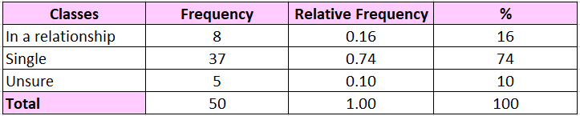
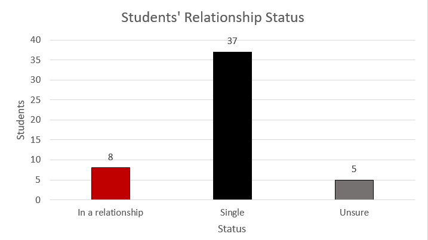
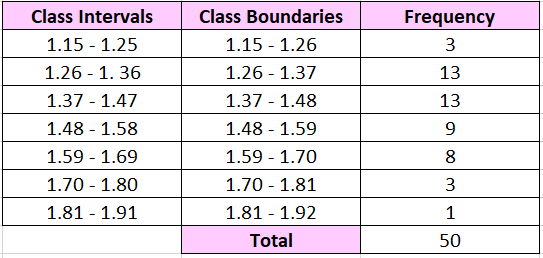
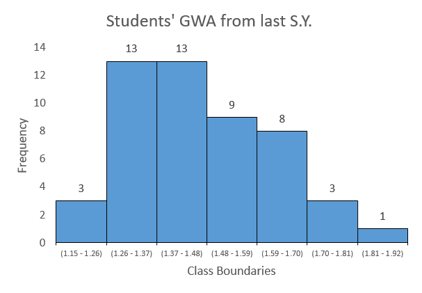
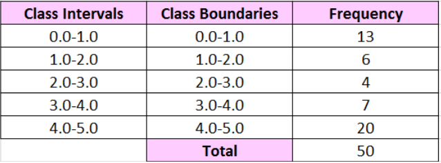
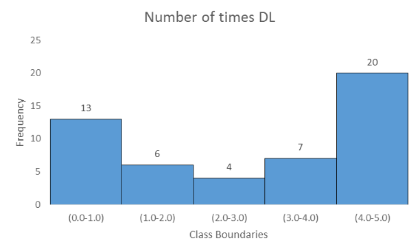

Project

The table above shows the frequency distribution of the students’ relationship with their parents. Majority of the students have a good relationship with their parents, others have a very good relationship, and only a small percentage has a bad relationship with their parents.
Breaking it down, 17 students (34% of the sample) report that they have a very good relationship with their parents. 29 students (58% of the sample) report that they have a good relationship with their parents. 3 students (6% of the sample) report that they have a bad relationship with their parents. And only 1 student (2% of the sample) report they have a bad relationship with their parents.

The graph above summarizes the frequency distribution of the students’ relationship with their parents. The x-axis (horizontal) represents the different categories of the relationship the students have with their parents, which are “Bad”, “Good”, “Very Bad’, and “Very Good”. The y-axis (vertical) represents the frequency of students falling into each category. The bars’ height corresponds to the frequency of students in each relationship category.
The highest bar, representing “Good”, shows that 29 of the students have a good relationship with their parents. “Very Good” is the next highest, representing 17 students. The next bar is “Bad”, representing 3 students. The “Very Bad” category is the lowest bar, representing 1 student.
This shows that the majority of the students in Batch 2027 are having a good relationship with their parents, meaning that they have a strong and positive relationship with their parents. However, there are still those students who have a bad relationship with their parents, meaning that there may be major challenges and conflicts within the parent-student dynamic.

The table above shows the frequency distribution of the students’ relationship statuses. Majority of the students are single, others are in a relationship, and others are unsure.
Breaking it down, 37 students (74% of the sample) report that they are not in a relationship or single. 8 students (16% of the sample) report that they are in a relationship. And 5 students (10% of the sample) are unsure of their relationship status.

The graph above summarizes the frequency distribution of the students’ relationship status. The x-axis (horizontal) represents the different relationship statuses of the students, which are “In a relationship”, “Single”, and “Unsure”. The y-axis (vertical) represents the frequency of students that fall into each category. The height of the bars corresponds to the frequency of students in each status category.
The highest bar, representing “Single”, shows that 37 students are not in a relationship. The next bar is “In a relationship”, representing 8 students. The “Unsure” category is the lowest bar, representing 5 students.
This shows that the majority of the students in Batch 2027 identify as single, meaning that they are not in committed relationships. A substantial number of students are in a relationship, and a smaller number of students are uncertain about their relationship status.

The table above shows the frequency distribution of the students’ GWA from last school year. Majority of the students have exemplary grades, others have good grades, a small number of students have outstanding grades, and the rest have adequate grades.
Breaking it down, 13 students have a GWA of 1.26-1.36. 13 students have a GWA of 1.37-1.47. 9 students have a GWA of 1.48-1.58. 8 students have a GWA of 1.59-1.69. 3 students have a GWA of 1.70-1.80. 3 students have a GWA of 1.15-1.25. And finally, there is 1 student 1.81-1.91.

The figure above is the histogram of the students’ GWA from last school year. The shape of the histogram is positively skewed or skewed to the right. This tells us that a significant number of the students are performing well academically. Several factors may contribute to this good academic performance; a competitive learning environment, dedicated efforts, and effective learning methods.

The table above provides the frequency distribution of the number of quarters the students got into the director’s list. Why do the class boundaries look wrong? It’s because the data we decided to collect has a unique measure and it is very limited. These boundaries define the range of each interval; the lower boundary is inclusive or included in the interval and the upper boundary is exclusive or excluded from the class interval.

The figure above is the histogram of the number of quarters the students got in the director’s list. The shape of the histogram is negatively skewed or skewed to the left. This tells us that a large number of the students got in the Director’s List last school year.
The majority of the students in Batch 2027 have a remarkable academic performance. The majority of the GWA is closely clustered to the median, indicating a high degree of consistency in academic performance. The majority of the students got into the director’s list for all quarters. These findings can be a source of pride for the institution and provide factors contributing to high academic performance. However, it is important to continue monitoring the needs of the students across the entire school, including those with lower GWA, to ensure comprehensive support and success for all the students.
Conclusion
This study sheds light on the relationship between personal life and academic performance within 50 students of Batch 2027 PSHS SMC. The results present valuable insights into the academic achievements in Batch 2027, emphasizing the prevalence of positive parent-student relationships, relationship statuses, and remarkable academic performance. While the findings offer a foundation for understanding this relationship, there is scope for further investigation and expansion to generalize the results to a broader educational context. These insights could contribute to the development of effective strategies to support students, especially those with lower academic performance, in their academic journeys.